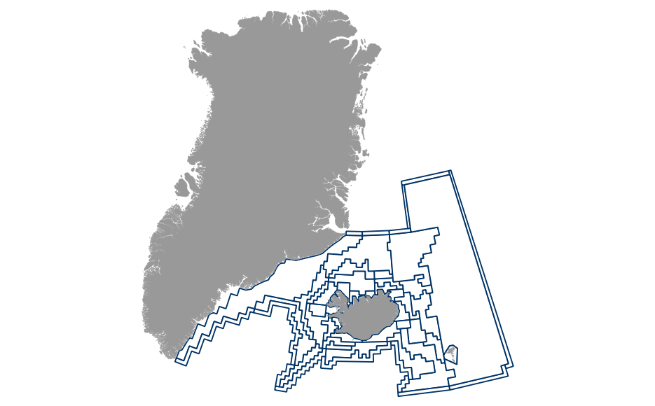

Math mode disabled while drafting
Atlantis requires a special spatial file format. This is termed a bgm file (box geometry file). The bgm file defines the geometry (i.e. bathmetry) used in the Atlantis model. The bgm file stores the spatial information in x and y terms rather than latitude and longitude. Information about the projection (used in the visualization of the spatial data and for determining the day length), number of boxes, number of dynamic faces, maximum depth, vertical mixing and horizontal transport scalars, whether a box is a boundary box (i.e. is it dynamic, meaning does it border the open ocean) and the spatial layout of the boxes and the faces (e.g. area, location of vertices, depth of box) are specified in the bgm file.
For the Icelandic Atlantis model, data provided by the Marine Research Institute (MRI) in Reykjavík contained in the reitmapping.tsv and the R geo package were used to develop the modelling domain. The subdivisions used are described in Anonymous (2004)1. The subdivisions were exported from R to QGIS where they were modified to not overlap with Iceland, Greenland, and the Faroe Islands and boundary boxes were added around the subdivisions. The boundary boxes, generally, buffer the active model area by 1/2 degree longitude and 1/4 degree latitude. These boundary boxes were selected to be make the interpolation of the hydrography data easier. The modelling domain of the Iceland Atlantis model is shown below.
.
Comparing the figure with the Figure 9.7 in Anonymous (2004), the location and, generally, uniform width of the boundary box around the subdivisions is easily discernible.
On the CSIRO wiki, there are various tools to help generate a bgm file. In particular the bgmeriser.jar tool was used after the shapefile was cleaned in QGIS and GRASS. The projection used was ISN93/Lambert 1993, which corresponds to the following proj4 format:
+proj=lcc +lat_1=64.25 +lat_2=65.75
+lat_0=65 +lon_0=-19 +x_0=500000
+y_0=500000 +ellps=GRS80
+towgs84=0,0,0,0,0,0,0 +units=m +no_defs
The maximum depth for each box in the modelling domain was calculated using data provided in geo::gbdypi. The depths of the boxes ranged from 100m to 3800m. Iceland and the Faroe Islands, while included in the modelling domain, were assigned a depth of 0 in the model in order to avoid having islands in the model
For the Icelandic Atlantis model, the water column was split up into at most six water column layers: 0 - 50 m, 50 - 150 m, 150 - 300 m, 300 - 600m, 600 - 1000m, 1000m+ with one sediment layer. The size of these layers was selected after consultation with researchers at MRI and these layers are similar to depth layers reported Atlantis models (Link, Fulton, & Gamble, 20102; Savina, Fulton, Condie, Forrest, Scandol, & Astles, 20083).
The pinnepid group (PIN) consists of the two breeding Icelandic seal species: grey seal, Halichoerus grypus, and the common (or harbour) seal, Phoca vitulina. Data for the grey seal come largely from Hauksson (2007a)4 and Hauksson (2007b)5. Data on abundance and basic biology can be found in Hauksson (2007a) and data on von-Bertalanffy and weight-allometric growth parameters can be found in Hauksson (2007b). Grey seals breed between the middle of September to early November in colones along the southeast and northwest coasts. During other times of the year, grey seals are found throughout Iceland but are at higher densities off the west, northwest, and southeast coasts (Hauksson, 2007a). Grey seals were estimated to number around 4000 to 5000 in the 1960s, 8,000 to 11,500 in 1982, and 4,100 to 5,900 in 2002 (Hauksson, 2007a). Changes in population size appear to be associated with an increase of breeding land as people moved from the countryside in the 60s and the recent declines appears to be associated with increased fishing (Hauksson, 2007a). Given that the Icelandic Atlantis model is starting in 1948, the population size of 5,000 was used initially for grey seals.
Information on harbour seals come from Hauksson & Einarsson (2010a)6, Hauksson & Einarsson (2010b)7, Lydersen & Kovacs (2005)8. Lydersen & Kovacs (2005) provided growth parameters for the Svalbard population of harbour seals. This information was used for the Icelandic population as these data were not available. Natural mortality for pinnepids was set to .1425 based on previous studies (reported in Hauksson & Einarsson, 2010a).
Information on ocean quahog comes from Thorarinsdottir & Einarsson (1996)9, Thorarinsdottir & Jacobson (2005)10, the Icelandic Ministry of Fisheries11, and NOAA12.The ocean quahog is a long-lived (up to 400 years) bivalve occupying depths of 4 meters down to approximately 400 meters with depths up to 256 meters reported for Iceland (Thorarinsdottir & Einarsson, 1996). The majority of the catches in Iceland are reported between 5 and 50 meters (Thorarinsdottir & Jacobson, 2005). They inhabit soft, sandy soil where they are endobenthic and filter-feed on phytoplankton and detritus. They typically avoid gravel areas and have very slow recruitment. Males may mature as early as 10 years (49 mm shell length) and females may mature as early as 13 years (44 mm shell length) (citation in Thorarinsdottir & Jacobson, 2005). Spawning in Iceland peaks between June - July but occurs all year round (citation in Thorarinsdottir & Jacobson, 2005). Larvae are planktonic for 4 - 6 weeks and settlement peaks off Iceland during August. Recruitment has occurred every year since 2002 in Icleand but recruitment appears to peak every 20 years (citation in Thorarinsdottir & Jacobson, 2005). They are a cold-water invertebrate (could be affected by global warming?) and can tolerate temperates up to 12 celsius in Iceland (Thorarinsdottir & Jacobson, 2005).
According to the Icelandic Ministry of Fisheries, the stock size of ocean quahog in Icelandic waters is estimated at over 1 million tons with mean densities of 3.0 (+/- 0.3 SE), 2.8 (+/- 0.6 SE), and 4.2 (+/- 0.5 SE) kg/m$^2$ in the north-west, north, and east regions of Iceland (Thorarinsdottir & Einarsson, 1996).
All information on Norway lobster, Nephrops norvegicus, come from Pampoulie et al. (2010)13, Eiriksson (1999)14, the Icelandic Ministry of Fisheries, and personal communcations with staff at MRI in Reykjavík. Norway lobster are found exclusively in the south of Iceland at depths ranging from 100 - 300 meters (Eiriksson, 1999) preferring ocean temperatures of 6 - 9 celsius. They prefer soft bottom substrates (such as clay or sand), are endobenthic and feed on small benthic animals. They typically do not range more than 100 meters and there does not appear to be different genetic populations (Pampoulie et al. 2010)[@10].
Initial biomass estimates and spatial distribution comes from Jónas Jónasson at the MRI. Biomass in 1968 was used for Norway lobster, which was roughly the virgin biomass. This value was 30,940 tons and was distributed to Atlantis boxes proportionate to their reported landings.
The initial biomass for Iceland scallop was distributed to the Brieðafjorður region of the Atlantis model (i.e. box 31). This biomass was 100,000 tons.
For tracers with no data, e.g. pelagic bacteria, sediment bacteria, sediment silica, seagrass, etc, initial conditions were taken from Savina et al. (2008)'s model. These tracers were updated after running Atlantis.
The following R function was used to convert tons to either mg N/m$$$^3$$$ (invertebrates occurring in the water column) or mg N/m$$$^2$$$ (epibenthic and endobenthic invertebrates).
tons_mgN <- function(tons, unit){
mgN <- (tons * 1e9) / 20 / 5.7 / unit
return(mgN)
}
Where unit is either the area of the box or the volume of a layer.
The typical Beverton-Holt recruitment model can be expressed as:
$$ R = \frac{\alpha S}{1 + \frac{S}{K}}$$
Where $$$\alpha$$$ is the maximum number of recruits per individual and $$$K$$$ is the spawning stock biomass at which recruitment is 1/2 maximum.
In Atlantis, however, $$$\alpha$$$ represents the maximum number of recruits produced (units: individuals) and $$$\beta$$$ represents the spawning stock biomass at which recruitment is 1/2 maximum (units: mg N).
$$ R = \frac{\alpha S}{\beta + S} $$
Now if we let Atlantis's $$$\alpha$$$ and $$$\beta$$$ be represented as $$$\tilde{\alpha}$$$ and $$$\tilde{\beta}$$$ and set $$$\tilde{\alpha} = \alpha K$$$ and $$$\tilde{\beta} = K$$$, respectively, then we can derive the typical formulation of the Beverton-Holt equation:
$$ \frac{\tilde{\alpha} S}{\tilde{\beta} + S} = \frac{\alpha K S}{K + S} = \frac{\alpha S}{1 + S/K}$$
Therefore, we see that Atlantis's $$$\alpha$$$ is really $$$\alpha K $$$ (i.e. $$$R_{\infty}$$$) and $$$\beta$$$ is really $$$K$$$.
For cod, haddock, and saithe recruitment was initially calculated using MRI's recruitment and spawning stock biomass data. This data is available on their website in the summary.csv files for each of these species, respectively.
Primary producers are modelled as biomass pools (mg N/m$$$^3$$$) in each spatial box.
Rate of change for water column w for primary producer PP is:
$$\frac{d(PP_w)}{dt} = G_{PP_w} - M_{lys,PP} - M_{lin} - M_{quad} - \sum_{j = predators}P_{PP,j} $$
$$ G_{PX} = \mu_{PP} * \delta_{irr} * \delta_{nut} * \delta_{space} * PX$$
$$$G_{PP}$$$ is the growth rate for PP; $$$M_{lys, PP}$$$ is the loss of PP due to lysis; $$$M_{lin}$$$ and $$$M_{quad}$$$ are loss due to linear (density-independent) and quadratic (density-dependent) mortality not treated in the model, respectively; $$$P_{PP, i}$$$ are the losses of PP to predation by species i; $$$\mu_{PP}$$$ is the maximum growth rate; $$$\delta_{irr}$$$ is the light limitation; $$$ \delta_{nut} $$$ is nutrient limitation; and $$$ \delta_{space} $$$ is space limitation.
Invertebrates are measured either per-area (e.g. epibenthic and endobenthic species) (mg N/m$$$^2$$$) or per-volume (e.g. zooplankton) (mg N/m$$$^3$$$).
Rate of change for a standard invertebrate consumer SCI is:
$$\frac{d(SCI)}{dt} = G_{SCI} - M_{linSCI} - M_{quadSCI} - \sum_{j = predator}P_{SCI, j} - F_{SCI}$$
$$ G_{SCI} = \left( \epsilon_{SCI} * \sum_{i = prey} P_{i, SCI} + P_{DL, SCI} * \epsilon_{SCI, DL} + P_{DR, SCI} * \epsilon_{SCI, DR} \right) * \delta_{space} * \delta_{O_2} $$
$$$ G_{SCI}$$$ is the growth rate for SCI; $$$M_{linSCI}$$$ and $$$M_{quadSCI}$$$ are again unexplained density-independent and density-dependent mortaility whose purposes are to set a reasonable carrying capacity in Atlantis; $$$P_{SCI, j}$$$ is depredation of SCI by predator j; $$$F_{SCI}$$$ is fishing on the group (if applicable); $$$ \epsilon_{SCI}$$$ is the growth efficiency of SCI when feeding on living prey; $$$\epsilon_{SCI, DL}$$$ and $$$\epsilon_{SCI, DR}$$$ are the efficiencies when eating on labile and refractory detritus; $$$\delta_{space}$$$ is space limitation; and $$$\delta_{O_2}$$$ is oxygen limitation.
Vertebrates are tracked in age-groups in Atlantis by abundance, structural weight (bones and hard tissue, mg N/m$$$^3$$$), and reserve weight (soft tissue, mg N/m$$$^3$$$).
Rate of change for a vertebrate group V is:
$$\frac{d(V_{i,s})}{dt} = G_{V_{i, s}} $$
$$\frac{d(V_{i,r})}{dt} = G_{V_{i, r}} $$
$$\frac{d(V_{i,d})}{dt} = T_{im,V_{i}} - T_{em,V_{i}} - M_{linV, i} - M_{quadV,i} - \sum_{j = predator}P_{V, j} - F_{V_i}$$
Subscript i refers to age group i; s for structural weight; i for reserve weight; d for density; $$$T_{im,V_{i}}$$$ and $$$T_{em,V_{i}}$$$ represent movement of vertebrates into and out of the polygon. Growth for vertebrates is calculated the same way as for invertebrates with the exception that it is done for each age group and not as biomass pools.
Water column ammonia and nitrate concentrations are governed by uptake by autotrophs, excretion by consumers, nitrification, and denitification.
Rates of change for ammonia and nitrate are:
$$\frac{d(NH_3)}{dt} = - \sum_{} $$
The following equations were used to collect daily energy requirements for birds and mammals. These equations were reported in Hunt, Kato, & McKinnell (2000)15.
For birds:
$$ E = \exp{\left(3.24 + .727\log M\right)}$$
For mammals:
$$ E = \exp{\left(a + 0.75 \log M\right)}$$
Where E corresponds to energy requirement per day (kcal/day), M is mean body weight (kg), and a is 317 for toothed whales, 192 for baleen whales, 372 for otariid seals, and 200 for phocid seals. This was then converted to kj/day (1 kcal = 4.186 kj).
SHOULD FINISH THIS LATER BUT THE CRUMMY NOTATION KILLS ME :(
Anonymous. (2004). Development of structurally detailed statistically testable models of marine populations. Technical report. Fjölrit nr. 119. Marine Research Institute, Reyjavík, Iceland.↩
Link, J. S., Fulton, E. A., & Gamble, R. J. (2010). The northeast US application of ATLANTIS: a full system model exploring marine ecosystem dynamics in a living marine resource management context. Progress in Oceanography, 87(1), 214-234.↩
Savina, M., Fulton, E., Condie, S., Forrest, R. E., Scandol, J. P., & Astles, K. (2008). Ecologically sustainable development of the regional marine and estuarine resources of NSW: modelling of the NSW continental shelf ecosystem.↩
Hauksson, E. (2007a). Abundance of grey seals in Icelandic waters, based on trends of pup-counts from aerial surveys. NAMMCO Scientific Publications, 6, 85 - 97.↩
Hauksson, E. (2007b). Growth and reproduction in the Icelandic grey seal. NAMMCO Scientific Publications, 6, 153 - 161.↩
Hauksson, E. & Einarsson, S. T. (2010a). Historical trend in harbour seal (Phoca vitulina) abundance in Iceland back to the year 1912. ↩
Hauksson, E. & Einarsson, S. T. (2010b). Review on utilization and research on harbour seal (Phoca vitulina) in Iceland. NAMMCO Scientific Publications, 8, 341 - 353.↩
Lydersen, C. & Kovacs, K. M. (2005). Growth and population parameters of the world’s northernmost harbour seals Phoca vitulina residing in Svalbard, Norway. ↩
Thorarinsdottir, G. G, & Einarsson, S.T. (1996). Distribution, abundance, population structure and meat yield of the ocean quahog Arctica islandica, in Icelandic waters. Journal of the Marine Biological Association of the United Kingdom, 76(04), 1107 – 1114.↩
Thorarinsdóttir, G. G., & Jacobson, L. D. (2005). Fishery biology and biological reference points for management of ocean quahogs (Arctica islandica) off Iceland. Fisheries Research, 75(1), 97-106.↩
Anonymous. 2014, March. Icelandic Ministry of Fisheries and Agriculture. url: http://www.fisheries.is/.↩
Anonymous. 2014, September. NOAA Fishwatch. url: http://www.fishwatch.gov/seafood_profiles/species/clams/species_pages/ocean_quahog_clam.htm.↩
Pampoulie, C., Skirnisdottir, S., Hauksdottir, S., Olafsson, K., Eiríksson, H., Chosson, V., … & Hjorleifsdottir, S. (2010). A pilot genetic study reveals the absence of spatial genetic structure in Norway lobster (Nephrops norvegicus) on fishing grounds in Icelandic waters. ICES Journal of Marine Science, 68(1), 20 - 25.↩
Eiriksson, H. (1999). Spatial variabilities of CPUE and mean size as possible criteria for unit stock demarcations in analytical assessments of Nephrops at Iceland. Rit Fiskideild, 16, 239-246.↩
Hunt, G. L., Kato, H., & McKinnell, S. M. (Eds.). (2000). Predation by marine birds and mammals in the subarctic North Pacific Ocean. North Pacific Marine Science Organization.↩